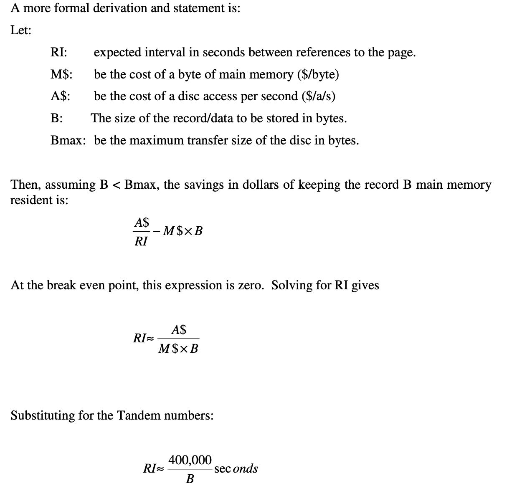

The Five Minute Rule 1987
原文里面提到了两个five minute rules, 第一个应该是最重要的: 对于随机访问需求 ，以page为单位，如果一个page在5min以内被多次访问，那么就应该驻留在内存中。
Pages referenced every five minutes should be memory resident.
这个分析方法很有意思，总结下来是这样的如图，我尝试用语言在描述下：
- 我们每次随机访问是以page为单位的(对应图中B), 单位是byte
- 磁盘随机访问（考虑时间）会有一个cost(对应图中A), 单位是$/a/s. (a=access, s=second)
- 内存有单位大小的存储价格(图中M), 单位是$/byte.
- 假设这个page被访问的时间间隔是RI. 单位是 (a/s).
那么A/RI表示从磁盘上访问这个page的价钱，而 MB 表示从内存上访问这个page的价钱. 然后按照当时 Tandem 的价钱来算，如果B=1KB的话，那么RI~=400s(5min).
Tandem 当时磁盘价格15K$, 速度是15access/second, 如果加上对应的cpu/channel cost的话，那么需要double, 算下来就是A=2K/a/s. 而当时内存价格是1MB值5K, 所以M=5$/K. 因此RI ~= 400000/B.
